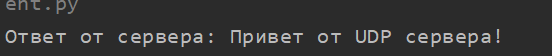
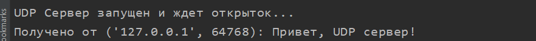
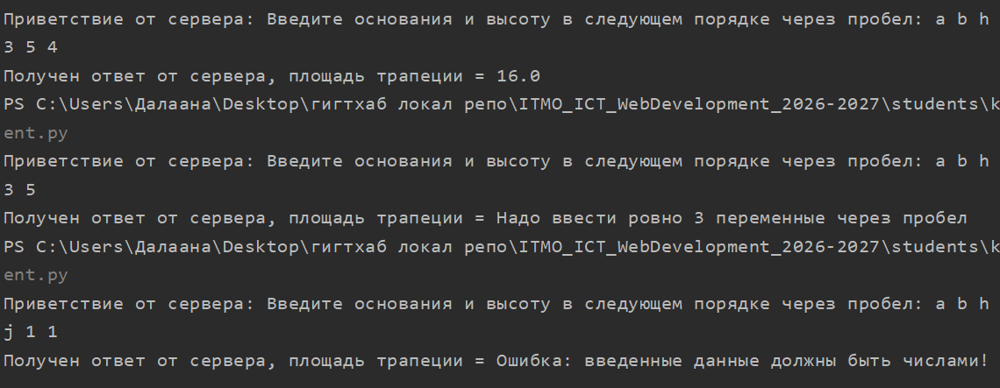
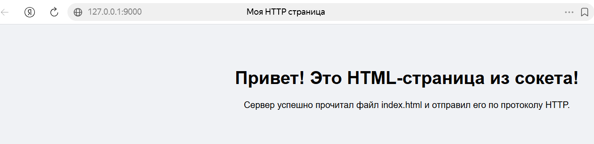
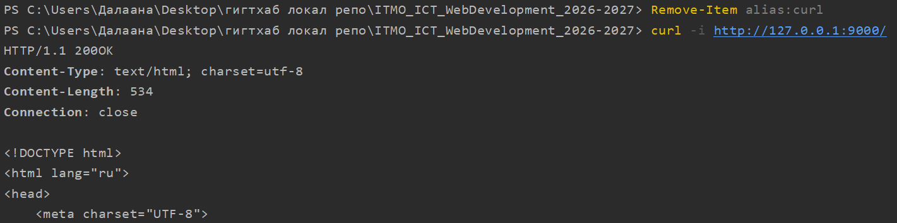
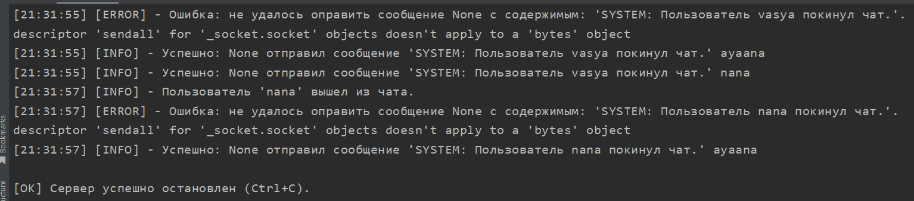
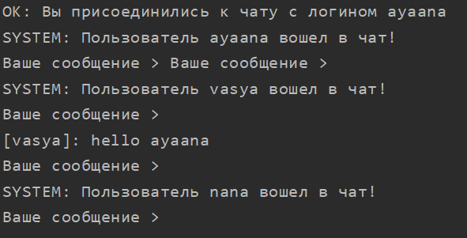
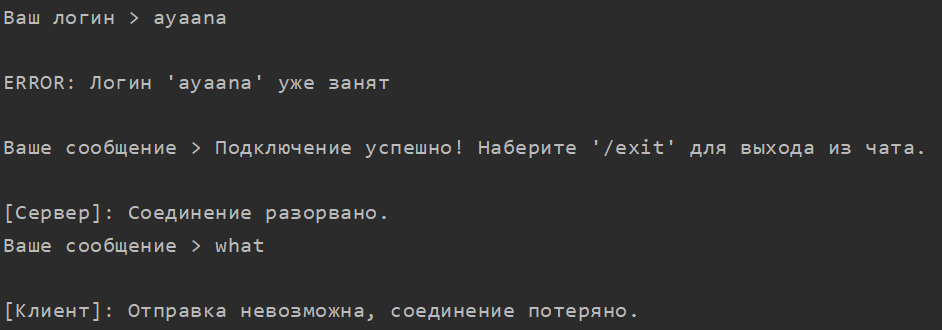
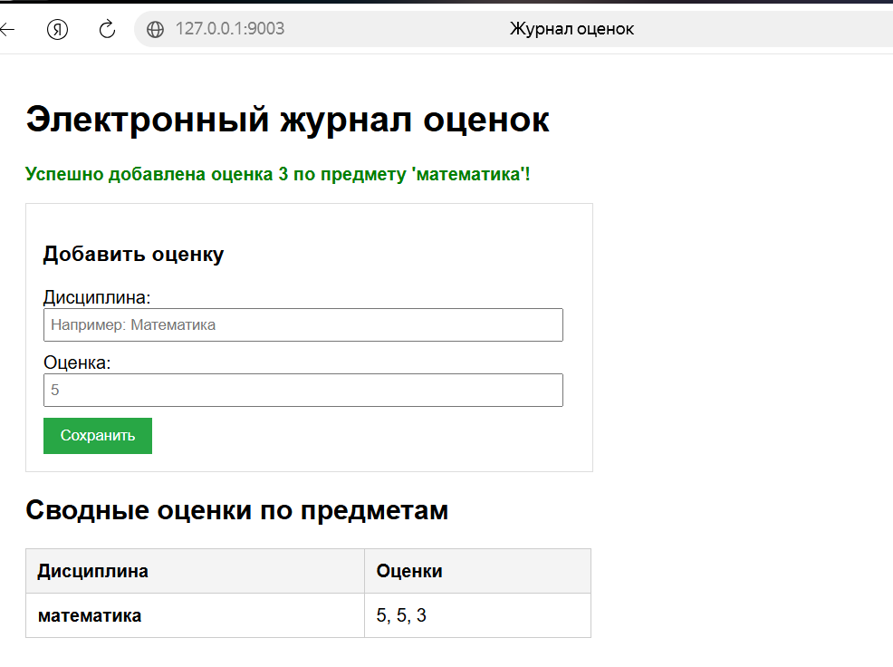
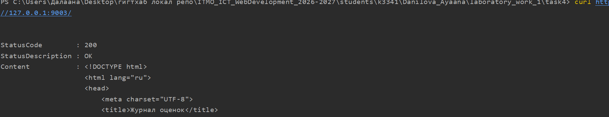

Лабораторная работа №1. Работа с сокетами
Цель работы
Понять принципы межсокетного взаимодействия в вебе. Научиться реализовывать базовую архитектуру клиент-сервер.
Используемые протоколы
| Протокол | Уровень | Соединение | Где применили |
|---|---|---|---|
| UDP | транспортный | нет, отдельные датаграммы, без гарантии доставки | задача 1 |
| TCP | транспортный | есть, надёжный упорядоченный поток байт | задачи 2, 4 |
| HTTP/1.1 | прикладной, поверх TCP | запрос-ответ (текстовый формат) | задачи 3, 5 |
Ход работы
Сервер и клиент запускали в отдельных окнах терминала, каждую программу — из папки своей задачи. В задачах 3 и 5 клиентом служил браузер (и curl для проверки заголовков).
Задача 1. UDP: клиент и сервер
Клиент отправляет строку, сервер печатает её вместе с адресом отправителя и отвечает.
server.py
import socket
server_socket = socket.socket(socket.AF_INET, socket.SOCK_DGRAM)
server_socket.bind(('', 12345))
print("UDP Сервер запущен и ждет открыток...")
data, client_address = server_socket.recvfrom(1024)
print(f"Получено от {client_address}: {data.decode('utf-8')}")
response = "Привет от UDP сервера!".encode('utf-8')
server_socket.sendto(response, client_address)
server_socket.close()
client.py
import socket
client_socket = socket.socket(socket.AF_INET, socket.SOCK_DGRAM)
server_address = ('localhost', 12345)
message = "Привет, UDP сервер!".encode('utf-8')
client_socket.sendto(message, server_address)
data, _ = client_socket.recvfrom(1024)
print(f"Ответ от сервера: {data.decode('utf-8')}")
client_socket.close()
Запуск (папка task1):
# терминал 1
python server.py
# терминал 2
python client.py
Ожидаемый результат: сервер печатает Получено от ('127.0.0.1', <порт>): Привет, UDP сервер!, клиент — Ответ от сервера: Привет от UDP сервера!.
client

server

Задача 2. TCP: вычисление площади трапеции
TCP-сервер принимает от клиента основания и высоту (a b h) и возвращает площадь (a + b) / 2 * h. Обрабатываются ошибки: неверное число параметров, нечисловой ввод, отрицательные значения.
Используется системный вызов select, так как он на уровне ядра Windows умеет корректно прерываться сигналами ОС, благодаря чему каждые 0.5 секунды (или мгновенно при нажатии Ctrl+C) select возвращает управление в интерпретатор Python, давая ему возможность сработать и проверить: «Не нажал ли пользователь Ctrl+C?
server.py
import socket
def calc_trapezoid_area(a: float, b: float, h: float) -> float:
return (a + b) / 2 * h
sock = socket.socket(socket.AF_INET, socket.SOCK_STREAM)
sock.setsockopt(socket.SOL_SOCKET, socket.SO_REUSEADDR, 1)
sock.bind(('0.0.0.0', 12345))
sock.listen(5)
while True:
client_sock, client_addr = sock.accept()
print(f"Подключился клиент с адресом {client_addr} и на порту {client_sock}")
try:
client_sock.sendall("Введите основания и высоту в следующем порядке через пробел: a b h".encode("utf-8"))
data = client_sock.recv(1024)
if not data:
client_sock.close()
continue
data = data.decode("utf-8", errors='ignore').rstrip()
if not data:
client_sock.sendall("Получен пустой ввод. Сокет выключается.\n".encode("utf-8"))
client_sock.close()
break
parts = data.split()
if len(parts) != 3:
client_sock.sendall("Надо ввести ровно 3 переменные через пробел".encode("utf-8"))
client_sock.close()
continue
a, b, h = map(float, parts)
print(f"Полученные байты переведенные в кодировку utf-8: a={a}, b={b}, h={h}")
client_sock.sendall(f"{calc_trapezoid_area(float(a), float(b), float(h))}".encode("utf-8"))
except ValueError:
client_sock.sendall("Ошибка: введенные данные должны быть числами!\n".encode("utf-8"))
except Exception as e:
client_sock.sendall("Ошибка: что-то со связью\n".encode("utf-8"))
finally:
client_sock.close()
sock.close()
client.py
import socket
import sys
sock = socket.socket(socket.AF_INET, socket.SOCK_STREAM)
sock.connect(('localhost', 12345))
hello = sock.recv(1024).decode("utf-8")
print(f"[Сервер] {hello}. Нажмите Ctrl+C для остановки.")
try:
sock.sendall(f"{input()}\n".encode("utf-8"))
except KeyboardInterrupt:
print("\n[OK] Клиент успешно остановлен пользователем (Ctrl+C).")
sock.close()
sys.exit(-1)
ans = sock.recv(1024).decode("utf-8")
print(f"Получен ответ от сервера, площадь трапеции = {ans}")
sock.close()
Запуск (папка task2):
# терминал 1
python server.py
# терминал 2
python client.py
# на приглашение ввести: 3 5 4 -> площадь 16.0
Дополнительно проверили обработку ошибок повторным запуском клиента с вводом 3 5 (неверное число параметров) и a b c (не числа).

Задача 3. HTTP-сервер, отдающий HTML-страницу
Программа запускает сетевое ожидание подключений через socket, затем отправляет ответно сокету правильно составленную html страничку, в том числе в случае отсутствия файла ошибку.
server.py
import os
import select
import socket
def run_server():
HOST, PORT = '127.0.0.1', 9000
path = 'index.html'
sock = socket.socket(socket.AF_INET, socket.SOCK_STREAM)
sock.setsockopt(socket.SOL_SOCKET, socket.SO_REUSEADDR, 1)
sock.bind((HOST, PORT))
sock.listen(5)
try:
while True:
readable, _, _ = select.select([sock], [], [], 0.5)
if sock in readable:
client_sock, client_addr = sock.accept()
print(f"Подключился {client_addr}")
try:
request = client_sock.recv(1024)
print(request.decode("utf-8"))
if os.path.exists(path):
with open(path, 'rb') as f:
html_content = f.read()
content_len = len(html_content)
headers = (
"HTTP/1.1 200OK\r\n"
"Content-Type: text/html; charset=utf-8\r\n"
f"Content-Length: {content_len}\r\n"
"Connection: close\r\n\r\n"
)
response = headers.encode("utf-8") + html_content
else:
error_body = "<h1>404 Not Found</h1>".encode('utf-8')
headers = (
"HTTP/1.1 404 Not Found\r\n"
"Content-Type: text/html; charset=utf-9\r\n"
f"Content-Length: {len(error_body)}\r\n"
"Connection: close\r\n\r\n"
)
response = headers.encode("utf-8") + error_body
client_sock.sendall(response)
except Exception as e:
print(f"Ошибка при обработке запроса: {e}")
finally:
client_sock.close()
except KeyboardInterrupt:
print("\n[OK] Сервер успешно остановлен (Ctrl+C).")
finally:
sock.close()
if __name__ == "__main__":
run_server()
index.html
<!DOCTYPE html>
<html lang="ru">
<head>
<meta charset="UTF-8">
<title> Моя HTTP страница </title>
<style>
body { font-family: sans-serif; background-color: #f0f2f5; text-align: center; padding-top: 50px; }
h1 { color: #1677ff }
</style>
</head>
<body>
<h1> Привет! Это HTML-страница из сокета! </h1>
<p>Сервер успешно прочитал файл index.html и отправил его по протоколу HTTP.</p>
</body>
</html>
Запуск (папка task3; путь к index.html относительный, поэтому запускать надо из неё):
python server.py
# в браузере открыть http://127.0.0.1:9000
# или посмотреть заголовки ответа:
curl -i http://127.0.0.1:9000/


Задача 4. Многопоточный TCP-чат
Сервер на каждого клиента запускает отдельный поток. Клиент первым сообщением отправляет логин; сервер проверяет его на пустоту и уникальность, после чего рассылает сообщения всем остальным участникам и уведомляет о входе/выходе. Общий словарь clients защищён threading.Lock. На клиенте приём сообщений вынесен в отдельный поток, чтобы input() не блокировал получение.
server.py
import logging
import select
import socket
import threading
HOST, PORT = '127.0.0.1', 9002
logging.basicConfig(
level=logging.INFO,
format='[%(asctime)s] [%(levelname)s] - %(message)s',
datefmt='%H:%M:%S'
)
clients = {str: socket.socket}
lock = threading.Lock()
def send_message(msg: str, sender_login: str = None):
with lock:
for client, sock in list(clients.items()):
if client != sender_login:
try:
sock.sendall(msg.encode("utf-8"))
logging.info(f"Успешно: {sender_login} отправил сообщение '{msg}' {client}")
except Exception as e:
logging.error(f"Ошибка: не удалось оправить сообщение {sender_login} с содержимым: '{msg}'.\r\n{e}")
def handle_client(client_sock, client_address):
login = None
try:
raw_login = client_sock.recv(1024).decode("utf-8").strip()
if not raw_login or raw_login.isspace():
client_sock.sendall("ERROR: Логин не был введен\n".encode("utf-8"))
logging.warning(f"Отказ: {client_address} ввел пустой логин")
# заканчивается обработка клиента, то есть в чат он не вошел бедни
return
with lock:
if raw_login in clients:
client_sock.sendall(f"ERROR: Логин '{raw_login}' уже занят\n".encode("utf-8"))
logging.warning(f"Отказ: логин '{raw_login}' уже используется ({client_address})")
return
# уведомляем, что все ок и начинаем держать активным сокет с пользователем = присоединение к чату
login = raw_login
clients[login] = client_sock
client_sock.sendall(f"OK: Вы присоединились к чату с логином {login}\n".encode("utf-8"))
logging.info(f"Пользователь '{login}' подключился с {client_address}")
send_message(f"SYSTEM: Пользователь {login} вошел в чат!")
# беспрерывно получаем сообщение от пользователя и отправляем в чат
while True:
msg = client_sock.recv(1024).decode("utf-8")
# на клиенте вызвали sock.close() или sys.exit()
if not msg:
break
if msg.lower() == '/exit':
break
client_sock.sendall("OK: Сообщение отправлено".encode("utf-8"))
logging.info(f"[{login}]: {msg}")
send_message(f"[{login}]: {msg}", sender_login=login)
finally:
if login:
with lock:
if login in clients:
del clients[login]
logging.info(f"Пользователь '{login}' вышел из чата.")
send_message(f"SYSTEM: Пользователь {login} покинул чат.")
client_sock.close()
def start_server(HOST: str, PORT: int):
sock = socket.socket(socket.AF_INET, socket.SOCK_STREAM)
sock.setsockopt(socket.SOL_SOCKET, socket.SO_REUSEADDR, 1)
sock.bind((HOST, PORT))
sock.listen(5)
logging.info(f"ЧАТ-сервер запущен на {HOST}:{PORT}")
try:
while True:
readable, _, _ = select.select([sock], [], [], 0.5)
if sock in readable:
client_sock, client_addr = sock.accept()
thread = threading.Thread(target=handle_client, args=(client_sock, client_addr), daemon=True)
thread.start()
except KeyboardInterrupt:
print("\n[OK] Сервер успешно остановлен (Ctrl+C).")
finally:
sock.close()
if __name__ == "__main__":
start_server(HOST, PORT)
client.py
import socket
import sys
import threading
from server import HOST, PORT
lock = threading.Lock()
def receive_messages(sock: socket.socket):
while True:
try:
msg = sock.recv(1024).decode("utf-8")
# срабатывает при client_sock.close()
if not msg:
print("\n[Сервер]: Соединение разорвано.")
break
print(f"\n{msg}\nВаше сообщение > ", end="")
except Exception:
break
sock.close()
def start_client():
sock = socket.socket(socket.AF_INET, socket.SOCK_STREAM)
try:
sock.connect((HOST, PORT))
except Exception as e:
print(f"Не удалось подключиться к серверу: {e}")
return
login = input("Ваш логин > ").strip()
if not login:
print("ERROR: Логин не был введен")
return
try:
sock.sendall(login.encode("utf-8"))
except Exception as e:
print(f"Не удалось отправить логин серверу: {e}")
return
recv_thread = threading.Thread(target=receive_messages, args=(sock,), daemon=True)
recv_thread.start()
print("Подключение успешно! Наберите '/exit' для выхода из чата.")
while True:
try:
msg = input("Ваше сообщение > ")
if not msg:
continue
if msg.lower() == "/exit":
print("Выходим из чата")
break
sock.sendall(msg.encode("utf-8"))
except (OSError, ConnectionResetError, BrokenPipeError):
# сокет уже закрыт потоком чтения, ничего отправлять не нужно
print("\n[Клиент]: Отправка невозможна, соединение потеряно.")
break
except KeyboardInterrupt:
# отправляем /exit только если сокет еще успешен
try:
sock.sendall("/exit".encode("utf-8"))
except OSError:
pass
break
sock.close()
sys.exit()
if __name__ == "__main__":
start_client()
Запуск (папка task4):
# терминал 1
python server.py
# терминалы 2 и 3 — два клиента
python client.py # логин: alice
python client.py # логин: bob
# обмен сообщениями, выход командой /exit
# проверка уникальности логина: третий клиент с логином alice



Задача 5. HTTP-сервер «Электронный журнал оценок»
Класс MyHTTPServer разбирает HTTP-запрос вручную: стартовую строку, заголовки и тело (по Content-Length). Поддерживаются:
GET /иGET /grades— страница со сводной таблицей оценок по предметам;POST /add_grade— добавление оценки (поляsubject,grade, форматapplication/x-www-form-urlencoded);- любой другой путь —
404; некорректные данные формы —400.
Оценки хранятся в памяти в defaultdict(list): {предмет: [оценки]}.
server.py
from collections import defaultdict
import select
import socket
import sys
from urllib.parse import parse_qs, urlparse
class MyHTTPServer:
def __init__(self, host: str, port: int, server_name: str = "GradeBookServer"):
self.host = host
self.port = port
self.server_name = server_name
# Хранилище оценок: {'Математика': [5, 4], 'Физика': [5]}
self.grades_db = defaultdict(list)
def serve_forever(self):
"""Обрабатывает входящие соединения"""
server_sock = socket.socket(socket.AF_INET, socket.SOCK_STREAM)
server_sock.setsockopt(socket.SOL_SOCKET, socket.SO_REUSEADDR, 1)
server_sock.bind((self.host, self.port))
server_sock.listen(10)
print(f"[{self.server_name}] Сервер запущен на http://{self.host}:{self.port}")
try:
while True:
readable, _, _ = select.select([server_sock], [], [], 0.5)
if server_sock in readable:
client_sock, client_addr = server_sock.accept()
try:
self.serve_client(client_sock)
except Exception as e:
print(f"Ошибка при обработке клиента {client_addr}: {e}")
finally:
client_sock.close()
except KeyboardInterrupt:
print("\n[OK] Сервер успешно остановлен (Ctrl+C).")
finally:
server_sock.close()
def serve_client(self, client_sock: socket.socket):
"""Обрабатывает клиентское подключение"""
rfile = client_sock.makefile("rb")
# Чтение первой строки
req_line = rfile.readline().decode("utf-8").strip()
if not req_line:
return
method, path, query_params, version = self.parse_request(req_line)
headers = self.parse_headers(rfile)
# Чтение тела запроса при наличии Content-Length
body = ""
content_length = int(headers.get("Content-Length", 0))
if content_length > 0:
body_bytes = rfile.read(content_length)
body = body_bytes.decode("utf-8")
status_code, reason, resp_headers, resp_body = self.handle_request(
method, path, query_params, headers, body
)
self.send_response(client_sock, status_code, reason, resp_headers, resp_body)
def parse_request(self, req_line: str):
"""Разбирает первую строку HTTP-запроса"""
words = req_line.split()
if len(words) != 3:
raise ValueError("Malformed request line")
method, raw_url, version = words
parsed_url = urlparse(raw_url)
path = parsed_url.path
query_params = parse_qs(parsed_url.query)
return method, path, query_params, version
def parse_headers(self, rfile):
"""Парсит заголовок"""
headers = {}
while True:
line = rfile.readline().decode("utf-8")
if line in ("\r\n", "\n", ""):
break
if ":" in line:
key, val = line.split(":", 1)
headers[key.strip()] = val.strip()
return headers
def handle_request(self, method: str, path: str, query_params: dict, headers: dict, body: str):
"""Обрабатывает URL в соответствии с нужным методом (GET / POST)"""
resp_headers = {"Content-Type": "text/html; charset=utf-8"}
# Главная страница + страница просмотра журнала (GET)
if method == "GET" and path in ("/", "/grades"):
html_content = self._render_grades_page()
return 200, "OK", resp_headers, html_content
# Добавление новой оценки (POST)
elif method == "POST" and path == "/add_grade":
parsed_body = parse_qs(body)
subject = parsed_body.get("subject", [None])[0]
grade_str = parsed_body.get("grade", [None])[0]
if subject and grade_str:
subject = subject.strip()
try:
grade = int(grade_str)
# Сохраняем оценку в список соответствующего предмета
self.grades_db[subject].append(grade)
# Возвращаем обновленную страницу
html_content = self._render_grades_page(
message=f"Успешно добавлена оценка {grade} по предмету '{subject}'!"
)
return 200, "OK", resp_headers, html_content
except ValueError:
return 400, "Bad Request", resp_headers, "<h1>Ошибка: Оценка должна быть числом</h1>"
return 400, "Bad Request", resp_headers, "<h1>Ошибка: Не переданы subject или grade</h1>"
return 404, "Not Found", resp_headers, "<h1>404 Page Not Found</h1>"
def _render_grades_page(self, message: str = "") -> str:
"""Вспомогательный метод для генерации HTML-страницы журнала"""
rows = ""
if not self.grades_db:
rows = "<tr><td colspan='2'>Журнал пока пуст</td></tr>"
else:
for subject, grades in self.grades_db.items():
grades_str = ", ".join(map(str, grades))
rows += f"<tr><td><b>{subject}</b></td><td>{grades_str}</td></tr>\n"
msg_html = f"<p style='color: green;'><b>{message}</b></p>" if message else ""
return f"""<!DOCTYPE html>
<html lang="ru">
<head>
<meta charset="UTF-8">
<title>Журнал оценок</title>
<style>
body {{ font-family: Arial, sans-serif; margin: 40px; }}
table {{ border-collapse: collapse; width: 500px; margin-top: 20px; }}
th, td {{ border: 1px solid #ccc; padding: 10px; text-align: left; }}
th {{ background-color: #f4f4f4; }}
form {{ margin-bottom: 20px; padding: 15px; border: 1px solid #ddd; width: 470px; }}
input {{ margin-bottom: 10px; padding: 5px; width: 95%; }}
button {{ padding: 8px 15px; background: #28a745; color: white; border: none; cursor: pointer; }}
</style>
</head>
<body>
<h1>Электронный журнал оценок</h1>
{msg_html}
<form action="/add_grade" method="POST">
<h3>Добавить оценку</h3>
<label>Дисциплина:</label><br>
<input type="text" name="subject" required placeholder="Например: Математика"><br>
<label>Оценка:</label><br>
<input type="number" name="grade" min="1" max="5" required placeholder="5"><br>
<button type="submit">Сохранить</button>
</form>
<h2>Сводные оценки по предметам</h2>
<table>
<thead>
<tr>
<th>Дисциплина</th>
<th>Оценки</th>
</tr>
</thead>
<tbody>
{rows}
</tbody>
</table>
</body>
</html>"""
def send_response(self, client_sock: socket.socket, status_code: int, reason: str, headers: dict, body: str):
"""6. Формирование status line, заголовков и отправка ответа"""
body_bytes = body.encode("utf-8")
headers["Content-Length"] = str(len(body_bytes))
headers["Server"] = self.server_name
headers["Connection"] = "close"
response_lines = [f"HTTP/1.1 {status_code} {reason}"]
for key, value in headers.items():
response_lines.append(f"{key}: {value}")
response_lines.append("")
response_lines.append("")
header_bytes = "\r\n".join(response_lines).encode("utf-8")
client_sock.sendall(header_bytes + body_bytes)
if __name__ == "__main__":
host = "127.0.0.1"
port = 9003
serv = MyHTTPServer(host, port)
try:
serv.serve_forever()
except KeyboardInterrupt:
print("\nСервер остановлен.")
sys.exit(0)
Запуск (папка task5):
python server.py
# в браузере: http://127.0.0.1:9003 — заполнить форму и нажать «Сохранить»
# то же через curl:
curl http://127.0.0.1:9003/
curl -i --data-urlencode "subject=Математика" --data-urlencode "grade=5" http://127.0.0.1:9003/add_grade
# проверка ошибок:
curl -i http://127.0.0.1:9003/unknown
curl -i -d "subject=Физика&grade=abc" http://127.0.0.1:9003/add_grade


Вывод
На практике разобрали, чем UDP отличается от TCP на уровне API сокетов (sendto/recvfrom против listen/accept/connect), написали TCP-сервер с обработкой некорректного ввода, многопоточный чат с общим состоянием под Lock и два HTTP-сервера, в которых запрос и ответ разбираются и формируются вручную (стартовая строка, заголовки, Content-Length, коды 200/400/404). Убедились, что при ручной сборке HTTP-ответа любая мелочь в формате (например, пропущенный пробел) ломает работу клиента.